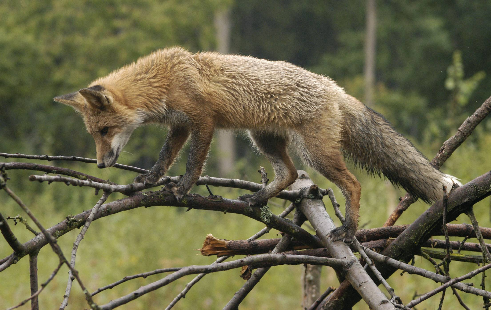

Liška lesní

Liška lesní je druh zvířete, které žije ve lesích. Má dlouhé tělo, špičatou hlavu a dlouhý chlupatý ocas. Její srst bývá červená nebo hnědá, ale někdy může být i šedá nebo černá.
Liška je dobrý lovec. Loví hlodavce, jako jsou myši a veverky, ale jí i ptáky, vejce, hmyz a ovoce. Umí se také dobře přizpůsobit životu blízko lidí.
Lišky jsou chytrá zvířata. Jsou aktivní především v noci. Na jaře mají mláďata, obvykle jich bývá až šest. Lišky jsou také známé jako lstivá zvířata.
Celkově vzato, liška lesní je lesní tvor se štíhlým tělem, dlouhým ocasem a srstí různých barev. Je to dobrý lovec a chytré zvíře, které se umí přizpůsobit různým prostředím.